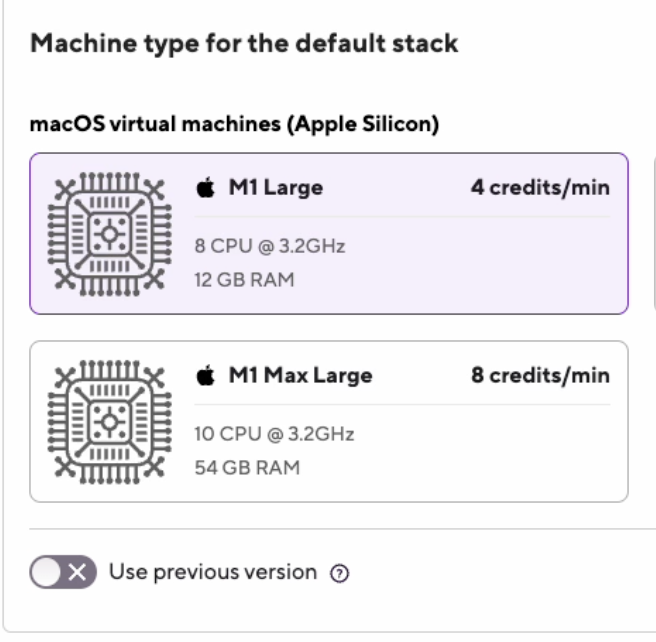

- Welcome to Bitrise documentation!
- Getting started
- Signing up for Bitrise
- Creating your first Workspace
- Adding a new app
- Webhooks and triggers
- Builds and Workflows
- Testing and deploying
- Migrating to Bitrise
- Signing up for Bitrise
- Creating your first Workspace
- Adding a new app
- Getting started with iOS apps
- Getting started with Android apps
- Getting started with React Native apps
- Getting started with Flutter apps
- Getting started with Ionic/Cordova apps
- Getting started with Expo apps
- Infrastructure
- Accounts
- Workspaces
- Apps
- Workflows and Pipelines
- Builds
- Code signing
- Testing
- iOS testing
- Android testing
- Flutter testing
- React Native testing
- Device testing with Firebase
- Test Reports
- Test Reports
- Exporting to Test Reports from any Step
- Running unit and UI tests for iOS apps
- Installing an .ipa file
- Registering test devices for iOS apps
- Device testing for iOS
- Running Android unit tests
- Device testing for Android
- Running tests in the Visual Studio App Center
- Running Detox tests on Bitrise
- Measuring your code coverage with Codecov
- Deploying
- Insights
- Bitrise CLI
- API
- References
- Getting started
- Bitrise Docs
Build stacks
The Bitrise build stack defines the virtual machine version used to run your builds. The main types are macOS stacks and Android & Docker stacks.
The build stack indicates the virtual machine version that we will use to run your build. The main stack types are:
macOS stacks: These stacks run on a macOS operating system and each one includes multiple Xcode versions. Ideal for building iOS apps. They also have Android tools installed if you want to use them to build a cross-platform app.
The Android & Docker stack: These stacks run on Linux operating system in a Docker environment. They have all Android tools installed and they are ideal for building native Android apps.
Free disk space
Each stack has at least 100 GB of free disk space. You can check each stack's exact available disk space on the relevant stack report page: Bitrise stack reports.
Each build runs in its own virtual machine and the virtual machine is rolled back to a saved state, the “base box” state, after the build is finished. This way your builds are always protected by changes made by others and by your previous builds and you can use a stable environment to define your build workflow, since no state persists between builds.
Passwordless sudo enabled
The user account that is used for the builds is configured to have passwordless sudo enabled. This way you are able to install all the extra things you need for your builds and for other automation. If a tool is not preinstalled on your stack of choice, you can install it yourself - see the guide.
After adding your app to Bitrise we will select an appropriate stack for it. You can change the stack at any time on the Stacks & Machines tab of the Workflow Editor.
After selecting the stack you want to use, you’ll see a short description of the stack with an additional link to learn more about that specific one (for example, to see what tools are preinstalled, and which versions, on the selected stack).
Type | Description |
|---|---|
Stable | Generally available and expected to be supported for the foreseeable future. Updated when an update for the stack’s primary tool is available. Example: when Xcode 7.3.1 was released, the Xcode 7.3 stack was updated to have 7.3.1 instead of 7.3(.0). |
Type | Description |
|---|---|
Pre-booted | If a stack is available as pre-booted, and there’s enough pre-booted machines with that stack configuration, your build can start right away, without waiting for the build environment to boot. In case there’s no more available pre-booted machine with that stack configuration, your build will start on an on-demand configuration. |
On-demand | If a stack is available as on-demand configuration and there’s no (available) pre-booted configuration for the stack, our system will have to create a virtual machine for your selected configuration when your build starts. This means that your build will be in preparing environment state while the related virtual machine is created & booted. For a macOS configuration the boot process usually takes about 1 - 1.5 minutes. The prepare time (of course) is not counted into the build time, it won’t affect how long your build can run. |
Stack update policy
Bitrise stacks are updated every week: some stacks are completely rebuilt while on others only certain cache archives are updated.
Bitrise stacks include the most important tools for mobile development pre-installed and ready for use. Our goal is to make Workflows simple and make your builds fast and efficient. These tools change continuously: old versions become deprecated and unsupported while new versions are released with new features and breaking changes.
Stacks on bitrise.io are updated regularly. The updates contain one or more of the following kinds of changes:
Tool upgrade: An already installed tool is upgraded to the latest version (for example, the git CLI is upgraded from 2.9.1 to 2.9.5).
Tool addition: A new tool is added (for example, the latest Android emulator system image becomes preinstalled when a new Android version is released).
Tool removal: A tool version is removed if it reaches end-of-life and poses a security risk, making another version of the tool the default (for example, Ruby 2.7 is removed, making Ruby 3.0 the new default).
Dependency mirror updates: On Xcode stacks, the local caches of Homebrew and Cocoapods are updated with the latest snapshot.
Platform changes: Changes to major components, like Xcode on macOS stacks, OS versions, Android SDK.
Using the previous version of a stack
Updating a stack to a new version might cause problems with some builds. To help ease the transition, you can use the previous version of a stack for 2-3 days after an update: Using the previous version of a stack.
For more information on what tools are available on the different stacks, check out our relevant guide: Preinstalled tools on Bitrise stacks.
Xcode stack updates
You can select macOS stacks based on the Xcode version you need. Under the hood, one VM image contains multiple Xcode versions installed and your requested Xcode version is activated at runtime before your Workflow starts.
As a rule of thumb, Xcode minor versions of the same major version share the same VM image, but there might be exceptions based on compatibility issues and other considerations.
Versioning
When talking about versions, we use semver terminology, regardless of how the various tools define their versions.
Stacks have a lifecycle and have four different states: Edge, Stable, Frozen and Removed.
Edge: These stacks are for previewing upcoming versions and changes. They are updated in-place regularly, and they include the latest stable release of Xcode, the latest beta release of Xcode (if available), the latest stable version of pre-installed tools, and the dependency manager cache updates. Regular weekly updates could add or remove tools, as well as upgrade the OS. Backwards compatibility for weekly updates is not guaranteed on an Edge stack. Run builds on Edge stacks to preview upcoming tool version changes (such as Ruby 3.2 becoming the default) and get access to the latest pre-release Xcode (such as Xcode 15 Beta).
Stable: These stacks are only updated with Xcode patch versions, dependency manager cache updates and with critical security fixes. Note that one specific stack that is in a stable state (for example, Xcode 14.3) could still receive a major update when a new Edge stack is released (a hypothetical Xcode 14.4 Beta) and the tool versions on the current Edge stack become the new Stable. For maximum reliability and reproducible builds, we recommend pinning exact tool versions in Workflows instead of relying on the stack defaults (for example, pinning a Ruby version).
Frozen: These stacks are no longer updated and flagged for removal in accordance with the Stack deprecation and removal policy. The stack is still available for yourbuilds but you will see the final removal date on the UI. Preinstalled tools are not updated, so it’s your responsibility to keep up with bugfixes and security patches.
Removed: These stacks are no longer available to use.
Dependency manager cache updates
Homebrew and CocoaPods dependency mirrors are updated frequently (usually each week) on all Xcode stacks.
These mirror updates do not change the preinstalled tool versions, only updating the package manager caches for faster dependency installs.
Edge stacks also receive package upgrades, meaning that Homebrew packages are updated to their latest versions.
State transitions for Xcode stacks
During the lifecycle of a stack it will transition between states when triggered by new Xcode and macOS releases. Stacks transition as follows:
Edge to Stable.
Stable to Frozen.
Frozen to Removed.
Edge stack updates
Edge stacks provide a way to preview and test upcoming changes. Xcode Beta versions become available as Edge stacks while final Xcode releases become available as new Stable stacks. Xcode Edge stacks change when:
The first Beta version of a new major Xcode version is released.
The first Beta version of a new minor Xcode version is released.
A new version of an Xcode Beta version is released.
When an Xcode minor version is released as a beta, it becomes available as an Edge stack. Other Edge stacks do not transition to Stable until the beta version in question is released as a GA version.
In this example:
The current latest Xcode version is 15.3.
A new Beta version of a new major Xcode version is released: Xcode 16.0 Beta 1.
Once the new Beta version is released, we update our stacks:
The new Xcode release becomes available on Bitrise as an Edge stack. In our example, Xcode 16.0 Beta 1 becomes available as the Edge stack.
Current Edge stacks are phased out, and users are automatically migrated to the new Edge stack. This happens a few days after the new Xcode release. In this example, this means phasing out Xcode 15.x Edge stacks.
Stable stacks are not affected at this point.
In this example:
The current latest Xcode version is 15.2.
A new Beta version of a new minor Xcode version is released: Xcode 15.3 Beta 1.
Once the new Beta version is released, we update our stacks:
The new Xcode release becomes available as an Edge stack. In this example, Xcode 15.3 Beta 1 becomes available as an Edge stack.
Stable stacks are not affected at this point.
In this example:
The current latest Xcode version is 16.0 Beta 1.
A new Beta version is released: 16.0 Beta 2.
Once the new Beta version is released, we update our stacks:
Xcode 16.0 Beta 2 replaces 16.0 Beta 1 on the Xcode 16.0 Edge stack.
Stable stacks are not affected at this point.
Stable stack updates
Stable stacks change less often than Edge stacks as we want to avoid unexpected breaking changes on these stacks.
Existing Stable stacks change when:
A new major Xcode version is released.
A new minor Xcode version is released.
In this example:
The current latest Xcode version is 15.3.0.
A new major Xcode version is released: Xcode 16.0.
When the new major version is released, we update our stacks:
New Stable stack: Xcode 16.0 becomes available on Bitrise as a new Stable stack.
Existing Stable stacks: new tool versions and other potentially breaking changes land on all Stable stacks.
Oldest Stable stacks become Frozen. In this example, Xcode 14.x stacks become Frozen, but still available for building. Tool versions are not changing on these stacks: their latest state is frozen.
Old Frozen stacks are removed: in this example, Xcode 13.x stacks are removed. The remaining users are migrated to newer stacks.
Changes to previous Stable stacks
We update previous Stable stacks when a new Xcode version is released for a number of reasons:
Most preinstalled runtimes and tools eventually reach their end-of-life according to support policy, after which they no longer receive bugfixes and security patches. We also need to periodically upgrade the default version of tools if the majority of our users move on to a newer version. There are also some breaking changes we need to make to enable new features and user requests.
While breaking changes are frustrating, we think that doing them only once a year on a predictable schedule (tied to the major Xcode release) is a good compromise. We are also trying to make the switch smoother by:
Offering Edge stacks to preview the changes. While one Edge stack is always tied to the latest Xcode Beta, we also offer Edge stacks for the last few stable Xcodes, so you can try the tooling changes without doing an Xcode upgrade in your project.
Communicating the changes in advance on all usual communication channels. For example, in a blog post.
Offering a temporary rollback option after each stack update.
In this example:
The current latest Xcode version is Xcode 15.2.
A new minor Xcode version is released: Xcode 15.3.
When the new minor version is released, we update our stacks:
New Stable stack: Xcode 15.3 becomes available on Bitrise as a Stable stack.
Xcode 15.3 Edge stack is updated with the final Xcode version.
macOS releases
The exact macOS version is always highlighted on the stack report pages.
When a new major macOS version is released, we upgrade the Edge stacks to the new OS after an internal testing period.
As a general rule, we don’t upgrade macOS on Stable stacks to avoid unexpected build failures. We wait until a future Xcode release starts requiring the new OS version (for example, Xcode 15.0, 15.1 and 15.2 are compatible with macOS Ventura, but 15.3 requires Sonoma). Once this happens, the Stable stack variant of this Xcode version is based on the new major OS version, while older Stable Xcode stacks remain on the older OS version.
While the new major OS is not available as a Stable stack, we recommend testing it on one of the Edge stacks. We are looking for your feedback, including edge cases and performance regressions.
Events not triggering a state transition
Not all Xcode releases trigger a transition. For example, Xcode beta minor version releases do not trigger an Edge to Stable stack transition: the new beta version simply replaces the old one. Xcode patch releases do not trigger an Edge to Stable stack transition. Instead, the Stable stacks will be updated in place with the new patch version.
Simulator runtimes on Xcode stacks
You can find the list of preinstalled tools, including simulator runtimes on our stacks on the stack reports pages.
You can expect the following simulator runtimes to be installed:
The matching runtime versions of a given Xcode version: these are the iOS, watchOS, tvOS and visionOS runtime versions that Xcode prompts you to download at first launch.
For iOS, we also install two additional versions: the two previous major versions, of which the latest minor version is installed.
For watchOS, we also install the previous major release’s latest minor version.
For example, when selecting the Xcode 15.0 stack, you can expect:
iOS 17.0: the matching runtime of this Xcode.
iOS 16.4: the latest minor release of the previous major iOS version.
iOS 15.5: the latest minor release of the second-previous major iOS version.
watchOS 10.0: the matching runtime of this Xcode.
watchOS 9.4: the latest minor release of the previous major version.
tvOS 17.0: the matching runtime of this Xcode.
visionOS 1.0: the matching runtime of this Xcode
Linux stack updates
Linux stacks on Bitrise are based on Ubuntu LTS releases. Each Bitrise stack is based on one Ubuntu LTS version and never gets upgraded to another. Instead, we release new stacks and sunset older ones over time.
Using the previous version of a stack
Not available on dedicated build environments
This feature is not available on an Enterprise plan with a dedicated build environment, because the user controls the rollout of stack updates on these plans.
We regularly update the Bitrise stacks based on user requests and external tooling changes. These updates can potentially introduce breaking changes, despite our efforts to avoid those.
For those cases, we provide a temporary option to use the previous version of a given stack for a few days after the release of a new version.
This is meant to be a temporary mechanism only. Because of infrastructure reasons, we can't keep the previous release available forever. Usually, the previous version is removed a few days after a successful release.
Once the previous version becomes unavailable, new builds run on the latest version even if this feature is enabled.
If a previous version is not available for a given stack at a given time, the switch is inactive and the feature can't be turned on. Any build triggered will run on the current version of the stack.
To use the previous version of your stack:
Workflow Editor
bitrise.yml
Open your app on Bitrise.
Click the button on the main page.

On the Workflows & Pipelines pages, you can:
Click the button to get to the bitrise.yml tab of the Workflow Editor.
Select a Workflow from the list of the app's Workflows.
Go to the Stacks & Machines tab.
Find the stack you want to configure: either the default stack or one of the Workflow-specific stacks.
Under the machine type for the chosen stack, toggle the Use previous version switch.
This modifies the
bitrise.ymlfile: it adds the previous version of the stack to themetablock.
If you store the bitrise.yml file in your own repository, you need to specify the exact rollback version in a meta object. You cannot use the toggle in the Workflow Editor to turn the feature on because the toggle can only modify a configuration file stored on Bitrise: we cannot edit the bitrise.yml in your repository.
Unavailable versions
If the specified version is not available, the Workflow Editor will display a warning. Any build triggered after a previous stack version becomes unavailable will run on the current stable version of the stack.
Find the
metablock in yourbitrise.ymlfile.Add a
stack_rollback_versionfield with the given version string.Finding out the previous version number
To find out the previous version string, open an older build, switch to the Details & Add-ons tab, and look for the Stack image version field.
meta: stack: osx-xcode-15.0.x machine_type_id: g2-m1.8core stack_rollback_version: 2-16-2
Changelog
March 2024
New:
Define what happens when an Edge stack is phased out in favor of a newer edge stack.
Removed:
When a new Xcode Edge stack is released, it no longer brings tooling changes to the Stable stacks.
Changed:
New, simpler simulator runtime policy. The same number of older iOS major versions are installed, but only the latest minor version is installed for each.
Stack deprecation and removal policy
On Bitrise, Android stacks are supported for around two years; Xcode stacks are deprecated gradually as new Xcode versions are released.
We don't keep all stacks around forever: our aim is to provide you with the latest tools to help you build the best app you can. However, we don't expect you to rework your build configuration every time a stack update comes out: you can keep using your reliable older stacks for a long time.
Some older stacks are frozen when a new major version of Xcode is released. When a stack is frozen, you can still keep using it, but the stack will no longer get any updates, and at that point, we strongly recommend switching to a newer, active stack.
After stacks have been frozen for a year, they are removed when the next major version of Xcode is released.
Maintaining Xcode stacks
We offer a wide variety of Xcode stacks in order to make sure you do not need to immediately switch when a new version comes out. Our policy is as follows:
Keep the three most recent major versions of Xcode.
Keep the two most recent minor versions for each major version of Xcode.
We base our policy on Apple's current release cadence: first beta in June, general availability in September.
The life cycle of a major Xcode version on our stacks is 36 months.
For 24 months, the stack is active and maintained according to our stack update policy.
After 24 months, the stack becomes frozen for 12 months and it will no longer receive updates. At this point, we strongly recommend migrating to an active stack.
After the end of the 36th month, the stacks of the major Xcode version are removed.
When Xcode version 15.2.x is released, we will keep:
All the latest patch releases for the two most recent minor versions of Xcode 15:
15.2
15.1
Xcode 15.0 will be removed.
The two latest versions from the previous two Xcode major versions:
Xcode 14.3
Xcode 14.2
Xcode 13.4 (frozen)
Xcode 13.3 (frozen)
In all cases, there will be a minimum of four weeks' notice provided for the removal of these stacks. You can see all upcoming stack deprecations on this page. We also recommend subscribing to RSS updates of important announcements about stacks.
Deprecating Linux stacks
A Linux stack is supported for about two years, roughly in sync with Ubuntu LTS (long term support) releases.
When a previous Linux stack reaches end of maintenance, we deprecate the stack and earmark it for removal. At that point you can no longer select the stack for your apps. But the apps that are already using those stacks can keep using them until removal.
In all cases, there will be a minimum of four weeks' notice provided for the removal of these stacks. You can see all upcoming stack deprecations on this page. We also recommend subscribing to RSS updates of important announcements about stacks.
Preinstalled tools on Bitrise stacks
Every Bitrise stack comes up with a large number of preinstalled tools and applications. Check the list in the system reports repository.
Every Bitrise stack comes up with a large number of preinstalled tools and applications to make sure the build process of your apps is as smooth and fast as possible.
Every time we create or update a stack we publish a stack report for it as well. The stack reports include the list of preinstalled tools and their version on the stack.
We update stacks regularly: macOS and Linux stacks are updated regularly to provide the latest installed tool versions.
You can find every available stack’s stack report on our dedicated page: Bitrise stack reports.
Installing tools during a build
If you can't find a tool you need on the build machine, you can always install it during the build itself: Installing tools during a build.
You can find some concrete examples in our Knowledge Base:
The Android/Linux/Docker environment
Bitrise's Android stacks run on Linux-based virtual machines that are created from Docker images. You can find all the image files on GitHub.
For our Linux-based stacks, we use standard Docker images, hosted on Docker Hub. You can find the available stacks, called Ubuntu for Android & Docker, in our stack reports.
Pre-installed tools
All stacks have a large number of pre-installed tools available: Preinstalled tools on Bitrise stacks
Every build runs in a new VM, not just in a new container. The VM is destroyed right after the build. This allows us to grant you full control over Docker and the whole environment.
When your build starts on a Docker-based stack, we volume mount the /var/run/docker.sock socket into your container (similar to calling docker run -v /var/run/docker.sock:/var/run/docker.sock .... You can find a description about this access granting method here).
The docker binary has to be installed inside the base Docker image because docker started to migrate from a single-binary solution to dynamically loaded components, and simply sharing the docker binary is not sufficient anymore.
We install Docker in every one of our Docker images so that you don’t have to do anything if you use our image, or you base your own image on our Docker images.
This means that you have access to docker in your container, and can use other tools which use docker, like docker-compose. You can, for example, configure and run tests and other automations on website projects using docker-compose.
You can call docker info, docker build, docker run, docker login, docker push exactly how you would on your own machine.
Shared volumes
If you want to run docker in your build and share volumes, please note that only those volumes can be shared that are shared with the base docker container (the one your build is running in). This is due to how docker handles volume sharing. Everything under /bitrise can be mounted as a volume, but no other path is guaranteed to work with --volume mapping.
It means that if you use the standard paths and you use relative paths to mount volumes, it’ll work as expected, as the default source code directory is located inside /bitrise (by default it’s /bitrise/src in our Docker images).
What WON’T WORK, however, is if you change the source code directory to be located outside of /bitrise, or you want to mount a folder with an absolute path outside of /bitrise.
Managing Java versions
All Bitrise virtual machines have Java 8, Java 11, and Java 17 pre-installed. The default version is Java 17 but you can switch versions at any time.
By default, every Bitrise stack comes with Java 11 pre-installed and ready to use. If you do not switch to another version, your build will use Java 11.
In addition to 11, we have two more Java versions pre-installed on all stacks:
Java 8
Java 17
You can switch between the versions at any time. You can also install a different Java version (for example, 14).
Potential issues with Java versions
Using a new Java version, or switching Java versions during a build might cause unexpected issues:
Setting Java version with the Set Java version Step
Each Bitrise stack has three different Java versions pre-installed: 8, 11 (the default version), and 17. You can easily switch between the different Java versions with our Set Java version Step. The Step allows you to set the global Java version of the virtual machine that runs your build.
Installing a new Java version
This Step cannot install any Java version. It can only switch between the versions that are pre-installed on our stacks. If you want to install a Java version that is not available on our stacks by default, check out Installing a Java version on an Android stack.
Add the Set Java version Step to your Workflow. We recommend setting it as the first Step of the Workflow.
Find the Java version to be set globally for the build input.
Set it to the version you need.
The options are:
8
11 (the default value)
17
In this example, we're setting the Java version to 17 in the bitrise.yml file.
primary:
steps:
- set-java-version@1:
inputs:
- set_java_version: '17'Installing a Java version on an Android stack
If you need a Java or JDK version which is not installed on our Android stacks, follow this guide. The example below will install Java/JDK 1.14 with a Script Step. You can adapt it to the version of your choice.
Open your app on Bitrise.
Click the button on the main page.
On the Workflows & Pipelines page, find the Workflow you need and click into its row to open the Workflow Editor.

Add the Script Step to your Workflow.
In the Script content input of the Step, add your script:
The example below installs Java 14 but feel free to replace the
openjdk-14-jdkandjava-1.14.0-openjdk-amd64parts with your version of choice.#!/bin/bash set -ex add-apt-repository -y ppa:openjdk-r/ppa apt-get update -qq apt-get install -y openjdk-14-jdk update-java-alternatives -s /usr/lib/jvm/java-1.14.0-openjdk-amd64 echo "done"
Start a new build. This Script Step can be the very first Step in the Workflow, as it does not depend on anything else.